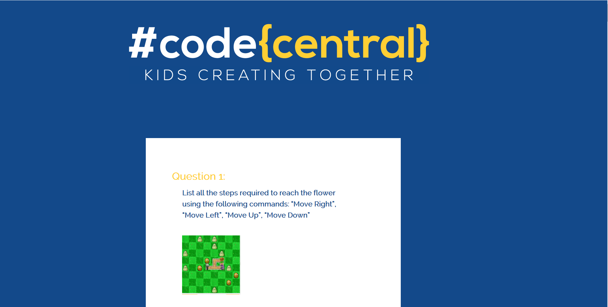
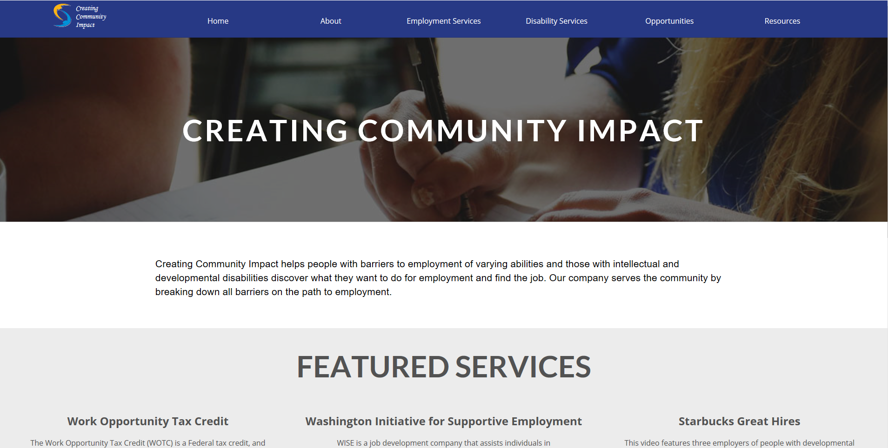
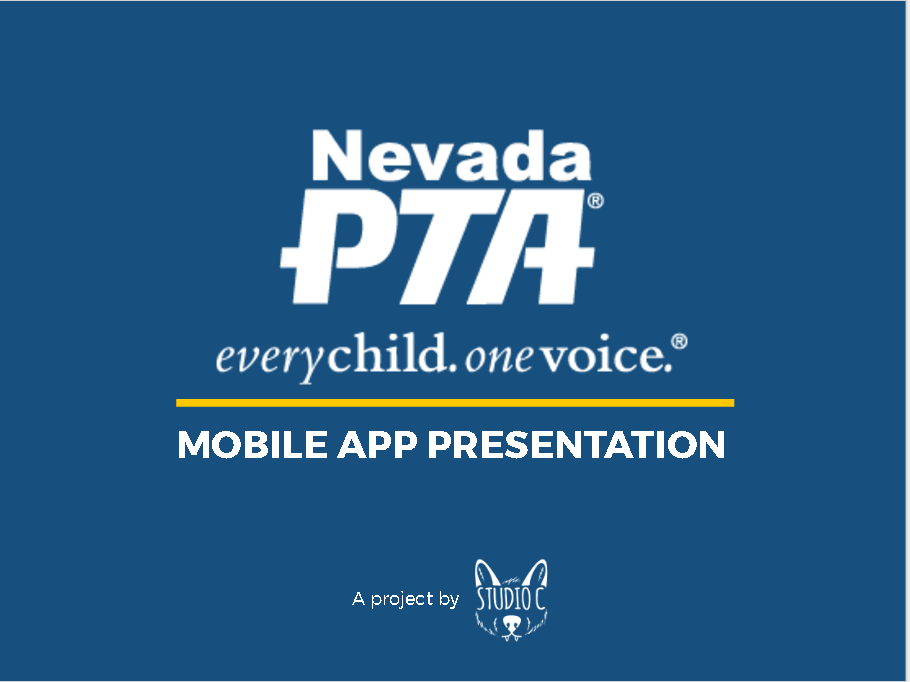

Studio C was a classroom internship I was involved in and an important step as a Web Designer. Assignments and projects were taken beyond the traditional classroom setting as I fulfilled requests from real clients on a daily basis in order to simulate the work environment. Initially, I was the the manager of the content department; after realizing I could contribute more as a programmer, I transferred to the coding department.
This is our very own professional website created for Studio C. Click here to visit!
Code Central is an after-school technology center where youth ages 7-17 learn the fundamentals of programming, app development and computer science. I developed a quiz app for this organization, utilizing CSS and JavaScript.
Creating Community Impact is a job development company that seeks to assist individuals in finding sustainable employment that meets the needs of each individual. This was our first major client project; I played a major role as content manager for the site to gather and organize content.
Studio C was asked by the Nevada Parent Teacher Association to create a mobile app similar to the Colorado PTA App. I was assigned to gather content for the app to assist Robert Casarotto, who programmed the app using Ionic.
Studio C was a wonderful experience for me to grow as a leader and also understand how a real business operates. I am glad to have participated as a manager and as a programmer so I could see all perspectives. Even though there were struggles at times, I believe that our class was quite successful.